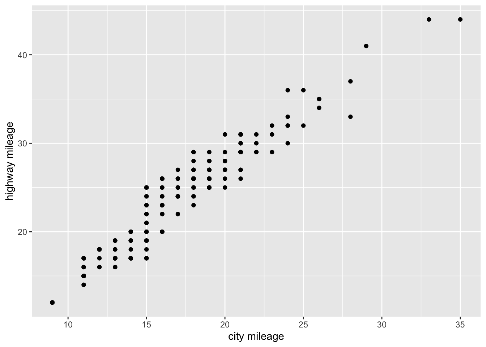
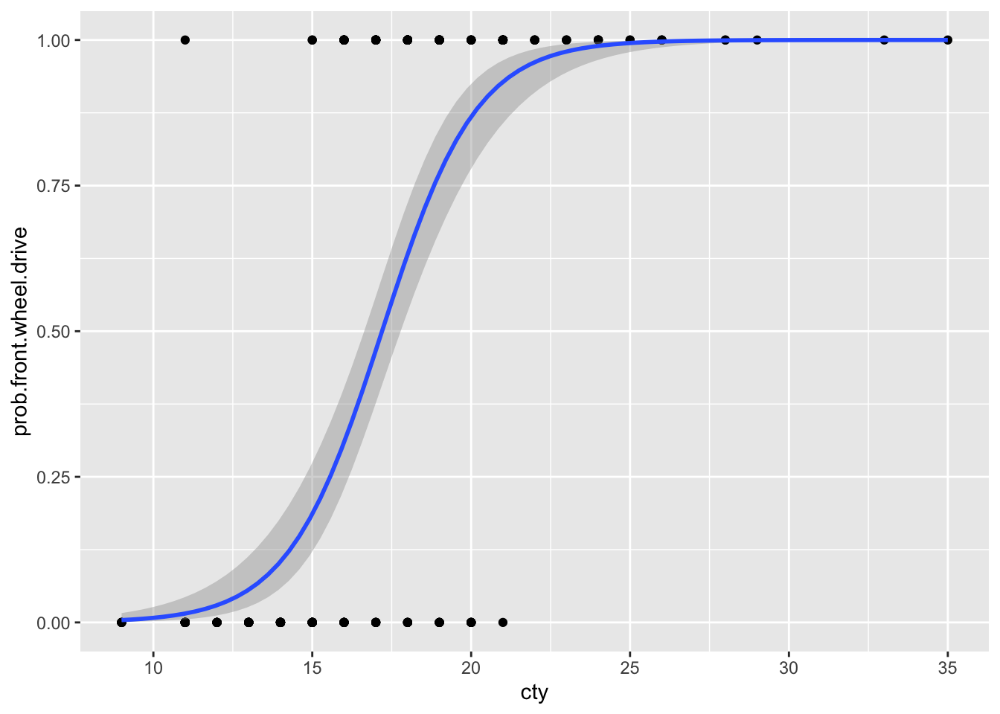

getwd()5 Behavior: Extra-pair copulation in a monogamous species

5.1 Goals
In this assignment, you will
- Develop and use your understanding of evolution, behavior, and prairie voles to make predictions about determinants of extra-pair copulation in a monogamous species.
- Enhance your quantitative reasoning and data analytic skills.
5.2 Preparatory Steps
- Watch three video lectures on evolution, life history, and behavior
- Download Solomon and Keane (2018), which is available in our PDF archive. Read the introduction to help you understand the context of this chapter.
5.3 Background: What causes extra pair copulation in prairie voles?
Monogamy, the mating system in which individuals pair-bond to raise offspring, is relatively rare. We don’t know what causes this rarity, and nor do we know why it persists where it do occur. Prairie voles (Microtus ochrogaster), like humans, are famously monogamous, and behavioral ecologists have studied them for that reason. And, just like humans, voles also engage in extra-pair copulations that result in offspring, and scientists have been trying to understand the causes and consequences of those extra-pair copulations (Solomon and Keane 2018).
Monogamy is a mating system (sexual monogamy), but it is also one of many types of social system (social monogamy). Different species of animals engage in many forms of sociality (Nowak, Tarnita, and Wilson 2010; Nordell and Valone 2014; Kappeler 2019). For example, all species of ants and many species of bees live in large colonies with several castes of individuals (eusociality). Most species are entirely solitary (think grasshoppers, frogs, flies). Many species live in family social units or have primitive forms of eusociality (Nordell and Valone 2014). Social monogamy is the particular form of sociality in which a female-male pair lives together, often resulting in more successful rearing of offspring.
So why would socially monogamous individuals engage in extra-pair copulation?
One reason that individuals engage in extra-pair copulations is in order to avoid inbreeding depression. Breeding that results from matings between highly related individuals typically causes a decline in vigor and health of individual offspring and a reduction in fitness for those phenotypes. Inbreeding depression is the reduction in fitness due to breeding among relatives.
Fitness is the quantitative representation of natural and sexual selection within evolutionary biology. It can be defined either with respect to a genotype or to a phenotype in a given environment. In either case, it describes individual reproductive success and is equal to the average contribution to the gene pool of the next generation that is made by individuals of the specified genotype or phenotype. The fitness of a genotype is manifested through its phenotype, which is also affected by the developmental environment. The fitness of a given phenotype can also be different in different selective environments. (Quoted from Wikipedia)
5.3.1 Tinbergen’s four questions
This section is from an online course at Oxford University
In 1963 Niko Tinbergen published a seminal paper entitled On the aims and methods of ethology, which laid the foundation for how to conduct research in the fledging field of animal behaviour. The lasting contribution of the paper is that in it Tinbergen formulated four different, albeit somewhat interlinked, approaches to the study of animal behaviour, or four different types of questions we can ask about an observed behaviour.
The four questions are:
- Function (or adaption)
Why is the animal performing the behaviour? In which way does the behaviour increase the animal’s fitness (i.e. its survival and reproduction)? Examples are plentiful and include, among many others, nurturing of young to increase their chance of survival, migration to warmer (and more food rich) habitats, escaping or avoiding attention from predators etc.
- Evolution (or phylogeny)
How did the behaviour evolve? How has natural selection modified the behaviour over evolutionary time? This is typically addressed by the comparative approach, where the behaviour in question is compared among closely related species. Examples include how flight in birds may have evolved from gliding in dinosaurs or how the vertebrate and cephalopod eyes have evolved by convergent evolution, with the former having a blind spot, while the latter does not.
- Causation (or mechanism)
What causes the behaviour to be performed? Which stimuli elicit or what physiological mechanisms cause the behaviour? Examples include the role of pheromones and hormones, such as increasing testosterone levels (caused by increasing day length) causing male display behaviour in many species of birds, moving shadows causing ragworms to withdraw into their burrows or contrast on beaks causing herring gull chicks to peck.
- Development (or ontogeny)
How has the behaviour developed during the lifetime of the individual? In what way has it been influenced by experience and learning? Examples include how courtship behaviour improves with age in many birds and how predators learn to avoid toxic or dangerous prey with experience.
The four types of questions operate at two different levels. Questions 1 and 2 give ultimate or evolutionary explanations. These are answers that take a longer perspective and try to explain why the behaviour has evolved. On the other hand, questions 3 and 4 give proximate explanations. These are answers that look into the immediate mechanical reasons for how a behaviour is expressed. To obtain a full understanding of the costs, benefits and constraints that have shaped a given behaviour both ultimate and proximate answers must be obtained.
5.3.2 Determinants of extra-pair copulation in voles
So, what causes extra-pair copulation? What influences the probability that an individual enages in extra-pair copulation? We can think about these questions in any of the four contexts that Tinbergen’s questions provide.
Here are some factors that may help determine to the probability of extra-pair copulation:
- the relatedness of the extra-pair partner, and avoidance of inbreeding.
- the relatedness of the nest- vs. extra-pair partner.
- sex (perhaps females are more or less likely than males to seek opportunities)
- number in nest, if crowding is a proximate cue to mate with a nest partner or extra-pair individual.
It is not always clear how animals and plants identify individuals that are closely related or not related, but under many circumstances, they somehow seem to mate with individuals that are less related than by chance alone.
5.4 Data from the Solomon/Keane lab
Dr. Nancy Solomon and Dr. Brain Keane have been studying prairie voles for decades, and here we investigate our questions using one of their data sets.
The data file epr_209.csv contains observations on voles related to those we read about in Solomon and Keane (2018). These data are from sampling of voles from the Indiana site, collected over three years (2006-2008). This data file is available in our data repository
Each row in the data set is a record of a succesful copulation that resulted in at least one offspring. Included in each row we have the ofllowing columns:
- id - identification number of the individual
- sex - biological sex of the individual
- year - calendar year of data collection
- nest - the identity of the home nest of the individual
- size - number of individuals in the nest
- r - relatedness to the partner.
- pairtype - nest partner or extra-pair copulation.
Relatedness to a partner varies between -1 and +1. A value near zero indicates no more related than expected by chance; 1 is self-identity (e.g., clone) and negative values indicate even less related than we expect due to chance.
5.5 Your objectives
Ask yourself, “what the heck are these voles doing? is there anything in particular that seems related to the probability that an individual engages or does not engage in extra-pair copulation.
You will come up with a hypothesis about the conditions to might lead to more extra-pair copulations.
- Pose a question that you can express in a graph using these data. Rely on your understanding of evolution, behavior, and prairie voles to justify your question.
- Make a prediction. Draw a mock-up of the graph that is consistent with the mechanism you propose.
- Create R code to create the graph you want.
- Figure out what the graph tells you about the answer to your question. Does it match you expectations? Rely on your understanding of evolution, behavior, and prairie voles to interpret your result.
Put all of the above (question, hand-drawn graph mock-up, R figure of data, data-based answer to your question) in a document, and turn it in online. See Deliverables at the end of this chapter.
5.5.1 Write your own script
To create the graph, you will write your own script. Start as uysual, by finding out what your current working directory. Make sure it is Rwork. The read in your data and look at the variables. Then create the graph you want.
First we check the current working directory.
This should show a path to Rwork. If not, use the “Session” menu to set your working directory. If you don’t have an Rwork folder, see Chapter 1.
Next we load some packages that we will use.
library(tidyverse)── Attaching core tidyverse packages ──────────────────────── tidyverse 2.0.0 ──
✔ dplyr 1.1.4 ✔ readr 2.1.5
✔ forcats 1.0.0 ✔ stringr 1.5.1
✔ ggplot2 3.4.4 ✔ tibble 3.2.1
✔ lubridate 1.9.3 ✔ tidyr 1.3.1
✔ purrr 1.0.2
── Conflicts ────────────────────────────────────────── tidyverse_conflicts() ──
✖ dplyr::filter() masks stats::filter()
✖ dplyr::lag() masks stats::lag()
ℹ Use the conflicted package (<http://conflicted.r-lib.org/>) to force all conflicts to become errorsNext, we get the data.
- Go to our class data repository, and download
epr.csv. - Make sure the file remains in the same simple format, “comma separated values” (.csv).
- Put
epr.csvin your working directory,Rwork. - Continue to make sure the file remains in the same simple format, “comma separated values” (.csv).
Now import the data.
d209 <- read.csv("epr_209.csv")
str(d209)'data.frame': 250 obs. of 7 variables:
$ id : chr "101" "101" "1021" "1021" ...
$ sex : chr "male" "male" "female" "female" ...
$ year : int 2006 2006 2007 2006 2006 2007 2007 2006 2006 2006 ...
$ nest : chr "19/20/21" "19/20/21" "29" "32" ...
$ size : int 7 7 3 2 2 2 2 7 7 2 ...
$ r : num 0.378 -0.183 0.321 -0.109 -0.032 ...
$ pairtype: chr "nest" "nest" "nest" "extra" ...Use everything you have learned thus far, and the tutorial below to make the graph you want. After you make the graph you want, you can use ggsave("myVoles.png") to save the graph to your working directory.
5.5.2 Recoding “pairtype”
We can estimate the probability of something happening or not happening based on a series of successes and failures, like a coin coming up heads. A coin either comes up heads or it doesn’t - success or failure.
We need to create a variable that represents either an extra-pair copulation or a nest-pair copulation. We will code extra-pair copulation as 1 (success) and nest-pair copulation (failure).
d209 <- d209 %>%
mutate(
epc = ifelse(pairtype=="extra", 1, 0)
)
str(d209)'data.frame': 250 obs. of 8 variables:
$ id : chr "101" "101" "1021" "1021" ...
$ sex : chr "male" "male" "female" "female" ...
$ year : int 2006 2006 2007 2006 2006 2007 2007 2006 2006 2006 ...
$ nest : chr "19/20/21" "19/20/21" "29" "32" ...
$ size : int 7 7 3 2 2 2 2 7 7 2 ...
$ r : num 0.378 -0.183 0.321 -0.109 -0.032 ...
$ pairtype: chr "nest" "nest" "nest" "extra" ...
$ epc : num 0 0 0 1 1 1 1 0 0 1 ...Now we see that extra-pair copulation is coded as a number, just 0 or 1.
See below for an example of graphing zeros and ones on the y-axis, and a continuous variable on the x-axis, where we describe the probability that a car model has front wheel drive (y-axis), based its city gas mileage.
5.6 Graphing in ggplot()
Here is some general guidance for using ggplot():
ggplot(data= myDataset, aes(x= X-variable, y= Y-variable)) + geom_typeOfPlot()
- for a box-and-whisker plot:
geom_boxplot()This is a more transparent and useful alternative to standard barplot or column graph. - for a scatterplot
geom_point() - for a scatterplot with a fitted straight line
geom_point() + geom_smooth(method="lm")
First, we load the packages of the tidyverse. If you already loaded this package as part of tidyverse, then you have already done this step.
library(tidyverse)Here we use a data set ( mpg) that comes with R to help demonstrate examples. This data set, mpg includes fuel economy data from 1999 to 2008 for 38 popular models of cars.
glimpse(mpg)Rows: 234
Columns: 11
$ manufacturer <chr> "audi", "audi", "audi", "audi", "audi", "audi", "audi", "…
$ model <chr> "a4", "a4", "a4", "a4", "a4", "a4", "a4", "a4 quattro", "…
$ displ <dbl> 1.8, 1.8, 2.0, 2.0, 2.8, 2.8, 3.1, 1.8, 1.8, 2.0, 2.0, 2.…
$ year <int> 1999, 1999, 2008, 2008, 1999, 1999, 2008, 1999, 1999, 200…
$ cyl <int> 4, 4, 4, 4, 6, 6, 6, 4, 4, 4, 4, 6, 6, 6, 6, 6, 6, 8, 8, …
$ trans <chr> "auto(l5)", "manual(m5)", "manual(m6)", "auto(av)", "auto…
$ drv <chr> "f", "f", "f", "f", "f", "f", "f", "4", "4", "4", "4", "4…
$ cty <int> 18, 21, 20, 21, 16, 18, 18, 18, 16, 20, 19, 15, 17, 17, 1…
$ hwy <int> 29, 29, 31, 30, 26, 26, 27, 26, 25, 28, 27, 25, 25, 25, 2…
$ fl <chr> "p", "p", "p", "p", "p", "p", "p", "p", "p", "p", "p", "p…
$ class <chr> "compact", "compact", "compact", "compact", "compact", "c…For a box-and-whisker plot of highway mileage (hwy) vs. car type (class), with explicit labels.
ggplot(mpg, aes(x = class, y = hwy)) + geom_boxplot() +
labs(x="type of car", y="highway mileage")
5.6.0.1 Scatterplots
ggplot(mpg, aes(x=cty, y=hwy)) + geom_point() +
labs(x="city mileage", y="highway mileage")
ggplot(mpg, aes(x=cty, y=hwy)) + geom_point() + geom_smooth(method="lm")`geom_smooth()` using formula = 'y ~ x'
## for a scatterplot with a fitted curved line
ggplot(mpg, aes(x=cty, y=hwy)) + geom_point() + geom_smooth()`geom_smooth()` using method = 'loess' and formula = 'y ~ x'
5.6.0.2 Categorical responses
Often we would like to predict whether individuals fall into one category or another, such as coin flips of heads vs. tails, success vs. failure, sick vs. healthy, or engaging in extra-pair copulation vs. remaining monogamous. These kind of dichotomous data are called binomial data, and we think of these data as zeros and ones (0, 1), perhaps zero for heads and one of tails.
When we model binomial data (0,1), we put these 0s and 1s on the y-axis. Here is a worked example using mpg data.
First, create a dichotomous variable (0, 1) indicating whether a car model is front wheel drive or other (rear- or 4-wheel drive). A plot like this puts probability on the y-axis. In this case it is the probability that a car with a given mileage is a front-wheel drive car.
Convert a factor or character variable to zeros and ones. Here we convert the category of drive train (rear vs. front wheel drive) into ones for front wheel drive, and zeros for rear wheel drive. We use an “if-else” statement to do that.
mpg2 <- mpg %>%
mutate(
prob.front.wheel.drive = ifelse(drv=="f", 1, 0)
)Next we plot the zeros and ones on the y-axis against city mileage on the x-axis. We also add a particular kind of fitted line that shows us the expected probability that a car with a particular city mileage is front wheel drive. This curve is the result of a logistic regression model that we use for binomial data. The graph tells us that
ggplot(mpg2, aes(cty, prob.front.wheel.drive)) +
geom_point() +
geom_smooth(method="glm",
method.args = list(family = "binomial"))`geom_smooth()` using formula = 'y ~ x'
5.7 Deliverables
Create one document (presentation slide or other document) that,
- places the hand-drawn graph of your predictions side by side with the graph of the observed data,
- includes a succinct explanation of
- basis of your original prediction; explain why voles would behave the way you predicted they would. Do not rely on your intuition. Instead, use your knowledge of evolutionary biology, behavior, and voles in your explanation, and
- your observed result.
- includes a headline, that is, a title that provides your result or takeaway message, such as “Living in small groups enhances monogamy”.
Turn this in to the assignment on Canvas. (Previous versions asked to submit this to a Google Slide deck, but we will no longer do that.)